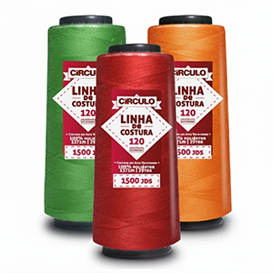
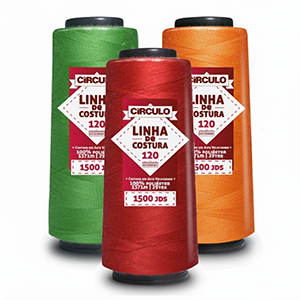

Sua Conexão Estratégica no Setor Têxtil
Com foco em eficiência, qualidade e atendimento consultivo, sou o elo entre sua confecção e três das maiores referências do mercado nacional. Minha missão é entender as demandas da sua produção, seja em pequeno, médio ou grande porte, e fornecer as melhores soluções em insumos e serviços.
Otimize sua cadeia de suprimentos contando com a excelência em fios, aviamentos e tinturaria.
Círculo | Aviamentos Industriais: Linhas e Zíperes


 



Representando a linha completa de insumos essenciais para a sua confecção. Fornecimento direto e consultoria para especificação correta de produtos, garantindo performance e durabilidade em todas as etapas de costura e acabamento.
- Linhas de costura, reta e overlock, de alta resistência, para máquinas de alto desempenho.
- Zíperes para diversos segmentos e aplicações | fixo | destacável | invisível | metal | tratorado.
- Ampla variedade de aviamentos e acessórios, como tesouras, colas, fitas e muito mais.
GS Tinturaria | Serviços Especializados em Tingimento de Malha


O parceiro ideal para o serviço de valor agregado que sua malha exige.
A GS Tinturaria oferece **qualidade, uniformidade de cor e pontualidade**, elementos cruciais para a gestão de produção de empresas de todos os portes.
Foco na excelência do processo para garantir que sua malha atinja o padrão de cor e toque desejado.
Serviços em Destaque:
- ✅ Tingimento de malhas com algodão, poliéster, viscose e poliamida
- ✅ Acabamentos em aberto / rama e tubular / calandra
- ✅ Felpadeiras (para tecidos com toque aveludado)
Cremer Erzkontor | Fios Têxteis de Poliamida (Nylon)


Os fios de poliamida importados e distribuídos pela Cremer Erzkontor são sinônimo de tecnologia e performance no desenvolvimento de tecidos.
Ofereço acesso direto a este insumo de alto valor, ideal para produtos que exigem toque macio, resistência e excelência em malharia e tecelagem.
- Distribuição, importação direta e financiamento de importação são modalidades que disponibilizamos para nossos clientes.
- Entre em contato para especificações técnicas, cotações de volume e prazos de entrega.
MPG Tech | Blog de Notícias e Tendências
Seja bem-vindo ao nosso espaço de conteúdo. Aqui você encontra análises de mercado, dicas de produção e novidades sobre insumos e serviços.
Entre em Contato Agora
Sua produção não pode parar. Estou pronto para atender suas necessidades e garantir o melhor custo-benefício em insumos e serviços. Fale comigo:
Mauricio Josefowicz
Telefone/WhatsApp: (47) 99997-7900
E-mail: mauricio.mpgtech@gmail.com
Siga-me no Instagram: @mpgtech